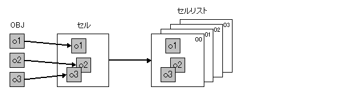
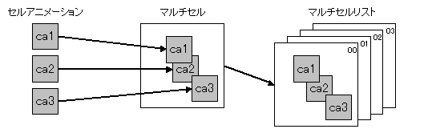

NITRO-Systemで表現できるアニメーション
説明
NITRO-Systemの2D開発環境では、セルと呼ばれる概念と、マルチセルと呼ばれる概念を用いて、パターンアニメーションを行うゲームキャラクタを構成します。
以下にこれらの概念について説明します。
セルとセルリスト

セルは、複数個のOBJを組み合わせて配置し、1つのゲームキャラクタを構成したものです。
部分部分で画像データの転用などを工夫すると、ゲームキャラクタを1枚の大きなOBJとして表示するよりも、キャラクタデータの使用効率が良くなる場合があります（左右対称ゲームキャラクタの半分だけをキャラクタデータとして作成し、そのデータを反転して利用するなど）。
また、複数OBJを組み合わせることで、OBJのサイズ制限以上の大きなゲームキャラクタを構成することが可能です。
セルリストは、複数枚のセルをまとめたものであり、後述のセルアニメーションから参照されます。
セルアニメーション
セルアニメーションは、複数枚のセルを次々と切り替えて描画することにより行われます。
アニメーションを構成するセルは、セルリスト内に登録されているセルを使用します。
アニメーションを構成している個々のセルには表示時間（フレーム数）を指定する事ができ、セルは指定されたフレームだけ表示され、次のセルに切り替わります。
マルチセルとマルチセルリスト

マルチセルは、複数個のセルアニメーションを組み合わせて配置したものです。
複数個のセルアニメーションを部品として使用して、1枚の大きなゲームキャラクタを構成します。
マルチセルリストは、複数枚のマルチセルをまとめたものであり、後述のマルチセルアニメーションから参照されます。
マルチセルアニメーション
マルチセルアニメーションは、複数枚のマルチセルを次々と切り替えて描画することにより行われます。
アニメーションを構成するマルチセルは、マルチセルリスト内に登録されているマルチセルを使用します。
アニメーションを構成している個々のマルチセルには表示時間（フレーム数）を指定する事ができ、マルチセルは指定されたフレームだけ表示され、次のマルチセルに切り替わります。
マルチセルを構成している部品であるセルアニメーションは、それぞれ自分自身に設定されているタイミングに従ってアニメーションを行います。すなわち、ゲームキャラクタの個々の部品が、異なったタイミングでアニメーションを行うという、複雑な動きをするゲームキャラクタを作成する事が可能となります。
VRAM転送アニメーション
前述のアニメーションは、いずれもセルが表示する画像（キャラクタ）データの参照先を切り替えることによって、アニメーションを実現していました。
しかし、非常に沢山の種類の画像データを使用して、多彩なアニメーションを実現しようとしたときに画像データの最大容量制限が問題になってきます。
VRAM転送アニメーションは、セルが参照する画像（VRAM）データを適宜転送して書き換えることで、アニメーションを実現する仕組みです。VRAM転送アニメーションを利用することで、ハードが必要とする画像データ容量を少なく抑えたまま、大量の画像データを使用してアニメーションを作成することが可能になります。VRAM転送アニメーションは2Dゲーム開発で、非常に沢山のアニメーションパターンを持つ、主人公キャラクタなどに一般的に利用される機能です。
VRAM転送アニメを利用するには、VRAM転送アニメ専用データとして、オプションを指定してコンバートする必要があります。（その際、入力NITRO-CHARACTERデータはキャラクタ圧縮なし、1Dマッピングモード形式である必要があります。）
なお、厳密にはG2Dライブラリでは、VRAM転送タスクの請求を行う部分までを処理しており、実際のVRAM転送の実行、タスクの管理 については、処理を外部モジュールに委譲しています。
また、VRAM転送処理を行うモジュールの標準的な実装をGFDライブラリ内で提供しています。GFDライブラリのドキュメントを参照ください。
参照
なし
履歴
2004/12/06 初版